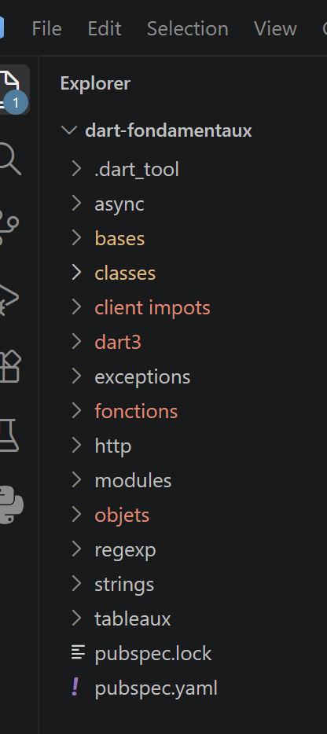

1. Introduction
The document’s PDF is |HERE|.
The document’s codes are |HERE|.
This document is a product of Anthropic’s Claude IA. Its purpose is to transpose the document [Introduction au langage TypeScript et au framework NestJS] by replacing the TypeScript language with the Dart language.
The Anthropic Claude model IA did the bulk of the work (90%):
- Code generation: Claude generated all of the code. I simply tested it by following the generated course. No Dart was available in the environment where Claude worked (unlike in the TypeScript course, where each script could be executed and verified by Claude): the scripts for this course were written and reviewed with the same care, checked for syntax (balanced curly braces and parentheses, presence of a [main] entry point in each executable script), but could not be compiled or executed prior to delivery. Note: All delivered code was tested by the course reviewer. Errors were reported to Claude, who corrected them immediately.
- Course generation in ODT format: Claude generated several versions at my request. This is where I was primarily involved.
Serge Tahé, September 2026
==
This document is an introductory course on the [Dart] language, designed on the same principle as the [Introduction to the TypeScript language and the NestJS web framework through examples (2026)] course: learning a language through a series of small, standalone scripts, commented line by line, rather than through a theoretical exposition of its grammar.
The progression follows exactly that of the TypeScript course: the same concepts, in the same order, with a Dart script alongside each TypeScript script. This symmetry is intentional: it allows you, at any time, to directly compare how Dart and TypeScript address the same need—and to identify, for each difference, what stems from a simple choice of syntax and what stems from a fundamental difference between the two languages (structural typing versus nominal typing, compilation versus transpilation, the presence or absence of implicit coercion, etc.).
Two chapters from the TypeScript course have been intentionally omitted here: PAS, [Introduction au framework Web NestJS], and [Étude de cas : le serveur de calcul de l'impôt en NestJS]. These two chapters cover a server-side web framework written in TypeScript—a topic not directly related to learning the Dart language itself. The NestJS tax calculation server, on the other hand, is retained: once installed (see the chapter “Installing a NestJS Server”), it serves as a real-world target for testing Dart functions—exactly as it serves as a target for the HTTP and TypeScript clients from the original course.
However, a difference in scope distinguishes this course from course TypeScript: the [Les fondamentaux] section of course TypeScript devotes three entire sections to recent updates to ECMAScript (2020–2024, 2026) and to API and [Temporal]. These new features are specific to JavaScript/TypeScript and have no direct equivalent in Dart; they are replaced here by a section on [Nouveautés Dart 3.x], dedicated to recent features specific to Dart: [records], [pattern matching], [sealed] classes, and class modifiers.
1.1. Target Audience and Prerequisites
This course is intended for readers who are already familiar with programming—ideally, those who have already taken the TypeScript course, since the constant comparison between the two languages is central to the teaching approach used here. No prior knowledge of Dart is required: each new concept is introduced through a minimal script, commented on in detail.
Contrary to the common misconception that reduces Dart to “the language of Flutter,” this course does not mention Flutter or mobile interfaces at any point: Dart is used here as a general-purpose programming language, run from the command line ([dart run]), exactly as TypeScript was used with [tsx] in the original course.
1.2. Organization of the Sample Project


The scripts for this course are provided in a separate directory structure, [dart-fondamentaux/], which mirrors the folder structure of the TypeScript course ([bases/], [tableaux/], [objets/], [strings/], [regexp/], [fonctions/], [exceptions/], [modules/], [async/], [classes/], [http/]...), plus a new folder, [dart3/], for the [Nouveautés Dart 3.x] section. A second directory tree, [dart-bases-de-donnees/], contains the “Database Access” chapter. Each folder contains its own [README.md] and, when necessary, its own [pubspec.yaml] (the Dart equivalent of [package.json] from Node.js; see the following chapter).
Each script is run individually using the command [dart run], followed by the script’s path—for example, [dart run dart-fondamentaux/bases/bases_01.dart]. No full installation of the project is required to run a single script: [dart pub get] (equivalent to [npm install]), run once at the root of a folder containing a [pubspec.yaml], is sufficient to install the dependencies for all the scripts it contains.